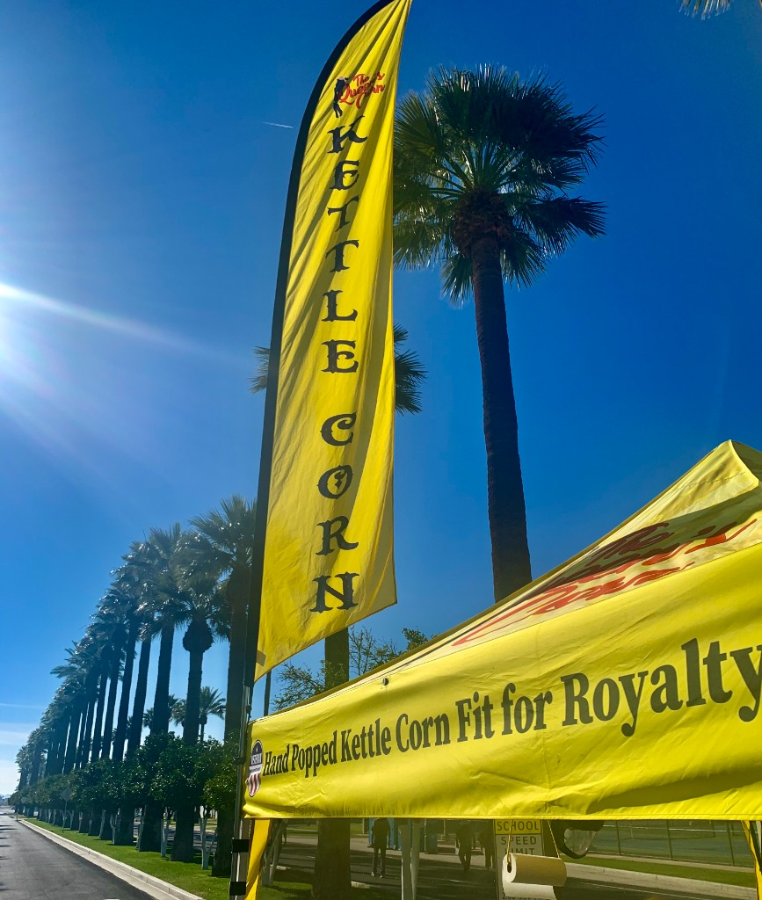
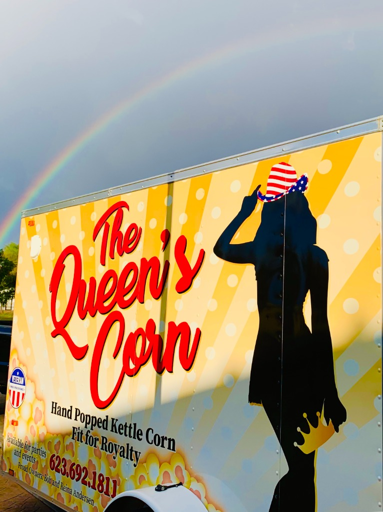

Caramel & Cheddar
from$6
Sweet amber caramel meets sharp cheddar in one bag.
Sweet
The single reference for how The Queen's Corn looks, reads and behaves on the website. Tokens live in tokens.css, component styles in components.css; this page shows how to use them.
The current site already feels warm and premium, and customers and the owners like it. What it lacked was the brand's own color and a page that sells clearly. v3.1 keeps the cream, the serif and the soft cards, and borrows the stand's red and canopy yellow as accents: one red action per view, one yellow highlight per view, real photos everywhere.



Use the token names in code, never the hex values.
Rhythm: dark hero → light trust strip and cream sections → dark markets band → butter fundraising → cream → dark footer. Never two dark blocks touching. Proportion per page. Red marks the one main action and prices. Yellow marks one thing to notice (the next pop-up, add to bag). Butter tints one highlight band.
--paper #FAF6EF--white #FFFDF9--red #D9232A--yellow #FFD84A--butter #FFF1C7--scrim / --scrim-side--espresso #1E1711--ink #241B13--ink-soft #6A5D4EOne color per category, only on flavor tags, taste meters and shop filters.
| Text | On | Ratio | Allowed for |
|---|---|---|---|
--ink | --paper / --butter / --yellow | 15.7 / 15.0 / 12.2 | All text |
--ink-soft | --paper / --white / --butter | 5.9 / 6.3 / 5.7 | All text |
| white | --red | 4.97 | All text (red buttons) |
--red | --paper / --white | 4.61 / 4.89 | All text; prefer ≥ 18px |
--red-deep | --paper | 6.22 | Small red text, eyebrows |
--paper / --yellow | --espresso | 16.4 / 12.8 | All text |
--red | --yellow | 3.59 | Display text ≥ 24px only |
| white | --yellow | 1.3 | Never |
Instrument Serif stays for headlines, prices and big numbers. It's set larger than before, with a red italic for the one phrase that matters. Outfit stays for everything people read and tap. Two families. The script lives only in the logo.
--font-displayInstrument Serif 400 only (never bold). Headlines, card titles, prices, dates. Sentence case. The italic in red marks one phrase per headline.
--font-bodyWe use pure corn oil, sugar and salt. Details matter, and we will never switch to a cheaper ingredient.
Outfit 400 / 500 / 600 / 700. Body, buttons, nav, forms; labels in 700 caps with 0.14em tracking.
--text-hero 44→84px--text-h1 36→56px--text-h2 32→48px--text-h3 26px--text-lg 19px--text-body 17px · 1.65--text-sm 15px--text-xs 13px--text-label 12px · 700 · capsRounded and calm like the current site, with warm espresso-tinted shadows that give cards real depth. The hero keeps today's dark brown photo shade. The event ticket carries the brand.
1px warm border, espresso-tinted shadow, 20px radius. Deeper shadow and a 3px lift on hover. --shadow-card --shadow-card-hover
Fully rounded, 48px tall. Red buttons carry a soft red glow. --radius-pill --shadow-button
Red date stub with a dashed perforation. Only for markets and events.
sm: inputs · md: size options · lg: cards, photos, bands · pill: buttons, stamps, tags.
Use only these steps. Sections are --space-9 (96px) apart on desktop and --space-8 (64px) on phones; cards use --space-4–--space-5 inside.
--space-14px · icon gaps--space-28px · tag gaps, label → title--space-312px · stacked UI items--space-416px · card padding, page gutter on phones--space-524px · grid gaps--space-632px · title → content--space-748px · large panels--space-864px · sections on phones--space-996px · sections on desktopReference builds from components.css. The website's components in src/components/ must match these. Change them here first.
Red: the one main action per view. Kettle: add to bag. Dark: fundraising and events. Outline: secondary links. Light (.btn-light): secondary on the dark hero. Verb first, sentence case.
Hero only. Real photo, --scrim-side on desktop and --scrim on phones, cream text, yellow italic, .btn-light for the secondary button, .popup-pill.dark for the next market.
Stamps: max 4 words, confirmed claims only. The yellow pill is the hero's one highlight: the next market people can visit or pre-order for.
Five kernels in the flavor color. One meter per card on the homepage.
Always show all three sizes with prices.
Sweet amber caramel meets sharp cheddar in one bag.

The original. Corn oil, cane sugar and salt, hand-stirred.
Multi-day dates use the smaller .range size so they never wrap.
Light card row with red serif figures; on the homepage it floats over the hero's bottom edge (.trust.float). Facts confirmed by the owners only. Live in src/components/TrustBanner.tsx.
One per page, mid-page (markets). Espresso ground, cream text, yellow eyebrow, white tickets. Balances the dark hero and footer.
Share your group's code, we pop every order fresh, and your team gets half of every sale.
Butter tint, one per page. The loud moment comes from the headline, not the background.
Real photos only: bright, close, with hands, paddles, steam and smiles. --radius-lg and --shadow-photo.

bob-reina.webpreina-stirring-kettle.jpgbob-pouring-kernels.jpgtrailer-rainbow.jpgbooth-palm-trees.jpgpopcorn-scoop-fresh.jpgGenerated images: hero*.png, flavor-*.png (bags show a fake red-hat logo), story-*.png, process-paddle*.png, variety-mix*.png, product-placeholder.png, royal-seal.png. Replace with real bag photos as soon as they're shot.
Friendly, proud, a bit playful, never corporate. “We” is Bob & Reina; “you” is the customer. Short sentences. Facts beat adjectives.
“Hand-popped kettle corn, fit for royalty.”
“The Queen's Corn is a happy place.”
“Corn oil, sugar and salt. That's it.”
“Pre-order and pick it up warm on Saturday.”
“Elevate your snacking journey” · “Premium experiences” · “Artisanal excellence”
Unverified numbers or rankings (“#1”, “$34,000 donated”) until confirmed
Emoji in headings or buttons · ALL-CAPS sentences · stacked exclamation marks
tokens.css: no raw hex, ad-hoc font sizes or one-off shadows.tokens.css, components.css and this page first.src/app/globals.css in the same commit.wiki/decisions/ and a line in wiki/log.md.tokens.css.Small, because v3.1 grows out of the current Buttercream site. Map for src/app/globals.css and the CSS modules on main.
| Today (main) | v3.1 token | Note |
|---|---|---|
--background / --cream #FAF6EF | --paper | Same value |
--surface / --surface-card #FFFDF9 | --white | Same value |
--text-primary #241B13 | --ink | Same value |
--text-muted #7A6E5F | --ink-soft #6A5D4E | Darker: passes AA |
--primary / --primary-hover | --red / --red-deep | Same red; deeper hover |
--accent #F5BA31 Kettle Gold | --yellow #FFD84A | Gold → canopy yellow, used less |
--surface-warm #F3EBDD | --butter | Warmer tint |
--dark-espresso #1E1711 | --espresso | Same value |
--border-subtle / --border-card | --line | |
--sage, --copper | --flavor-spicy, --flavor-sweet | Flavor coding only |
--font-serif / --font-sans | --font-display / --font-body | Same fonts; headings 400, never synthetic bold |
public/design-system.html (v2) | this page | Delete; it's publicly served |